Как установить Drupal 8 на Ubuntu/Debian
Руководство по установке CMS Drupal 8 на виртуальный сервер под управлением операционной системы Ubuntu/Debian.
CMS с открытым исходным кодом, проста в установке, позволяет создавать сайты любого размера и легко управлять ими с помощью бэкэнд-администрирования. По сравнению с предыдущими версиями Drupal 8 включает более 200 новых функции и улучшений:
Примечание: CMS - прикладное программное обеспечение с веб-интерфейсом, которое служит для управления (например добавление, редактирование, удаление) содержимым сайта.
Услуги 1cloud
Виртуальный сервер на базе Linux
Все действия в данной инструкции выполняются с правами суперпользователя.
Перед тем, как начать работать с Drupal, на виртуальный сервер необходимо установить LAMP-стек. Об этом подробно написано в нашей инструкции.
После того, как у вас есть необходимые права и нужное ПО, вы можете начать установку.
Первое, что нам нужно сделать, это загрузить архив приложения на ваш виртуальный сервер. С помощью утилиты wget скачиваем стабильную версию ПО с официального сайта разработчика:
cd ~
wget http://ftp.drupal.org/files/projects/drupal-8.3.4.tar.gz
С помощью команды tar распакуйте файлы:
tar xzvf drupal*
В итоге содержимое каталога будет следующим:
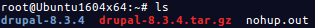
Скопируйте файлы в каталог с помощью команд: cd drupal-8.3.4
rsync -avz . /var/www/html
Настройка Drupal для обеспечения безопасности
Сценарий установки требует внесения некоторых изменений в каталог Drupal, чтобы закончить процесс правильно. Сначала сделайте нужный подкаталог подкаталог:
cd /var/www/html/sites/default/
mkdir files
Далее мы должны скопировать файл настроек по умолчанию в файл, который Drupal использует для активной конфигурации:
cp /var/www/html/sites/default/default.settings.php /var/www/html/sites/default/settings.php
Этот активный файл настроек временно требует дополнительных разрешений во время процедуры установки. Необходимо предоставить разрешения на запись владельцу группы:
chmod 664 /var/www/html/sites/default/settings.php
Нужно предоставить групповое владение файлами веб-пользователю, которым является www-data:
cd /var/www
chown www-data:www-data -R ./*
Создайте новую БД для MySQL для Drupal, для этого заходим в MySQL-оболочку:
mysql -u root -p
Войдите в СУБД, используя пароль суперпользователя MySQL. Затем нужно создать базу данных, нового пользователя в этой базе данных и предоставить ему привилегии.
Создаем базу данных:
CREATE DATABASE drupal;
Создаем нового пользователя:
CREATE USER duser@localhost;
Устанавливаем пароль для нового пользователя, указав вместо <пароль> ваш пароль:
SET PASSWORD FOR duser@localhost= PASSWORD(
"<пароль>");
Завершите настройку, предоставив все привилегии новому пользователю. Без привилегий CMS не сможет полноценно использовать базу данных:
GRANT ALL PRIVILEGES ON drupal.* TO duser IDENTIFIED BY
'<пароль>';
Затем обновите MySQL:
FLUSH PRIVILEGES;
На этом этапе можно выйти из оболочки MySQL:
exit
Для работы данной CMS необходимо установка специальных модулей php. С помощью последующих действий установите их:
apt-get update
apt-get install php7.0-gd
Далее сделаем несколько небольших изменений в файле конфигурации PHP. Откройте файл конфигурации Apache PHP в текстовом редакторе, например vi:
vi /etc/php/7.0/apache2/php.ini
Откройте директивы expose_php и allow_url_fopen и установите оба значения в "Off".
Примечание: в текстовом редакторе vi поиск можно осуществить следующем образом - нажмите “/”, введите слово для поиска, далее Enter. Перебор соответствий можно осуществить с помощью клавиши “n”.
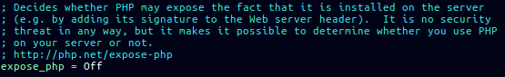
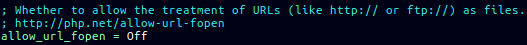
Чтобы перейти к настройке Drupal в браузере, необходимо отредактировать файл конфигурации apache:
vi /etc/apache2/sites-enabled/000-default.conf
Пример:
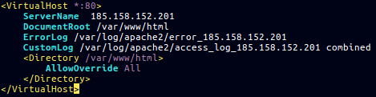
Примечание: если у вас несколько сайтов на сервере используйте документацию на Apache.
Настройка FireWall для возможности удаленного доступа (проброс порта):
iptables -A INPUT -p tcp --dport 80 -j ACCEPT
iptables-save
Примечание: после перезапуска сервера порт опять будет необходимо открыть.
Выполните перезапуск сервера Apache для проделанных изменений:
service apache2 restart
В адресной сроке браузера перейдите по ссылке, указав ваш АйПи-адрес:
<ip-адрес>
Например:
185.125.46.12
Выберете язык.
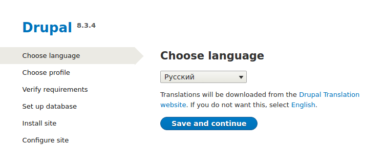
В окне установке выберете профиль Стандарт и нажмите Сохранить и продолжить.
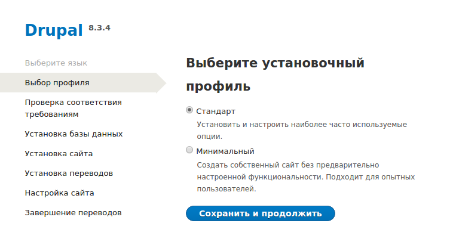
В следующем окне при возникновении ошибок установите недостающие модули.
Для продолжения перейдите по ссылке внизу страницы.
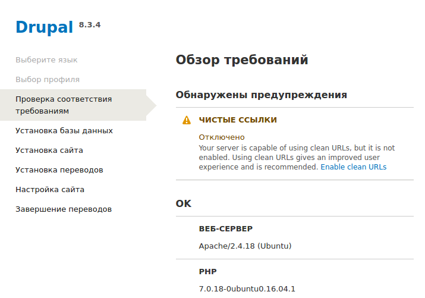
На следующем шаге введите созданного MySQL-пользователя, пароль и имя базы.
Примечание: когда вы нажмите Save and continue, есть вероятность, что вы будете перенаправлены обратно на ту же страницу конфигурации базы данных. Если это произойдет, просто обновите страницу. База данных будет настроена, и профиль будет установлен.
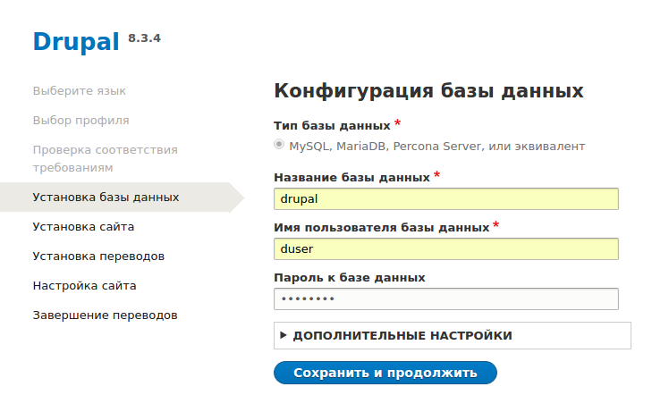
Как правило установка занимает некоторое время.
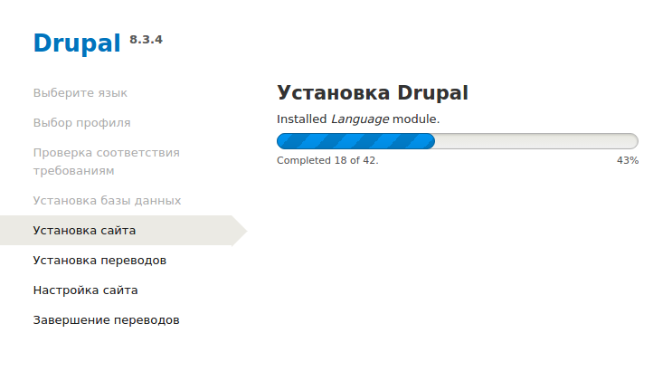
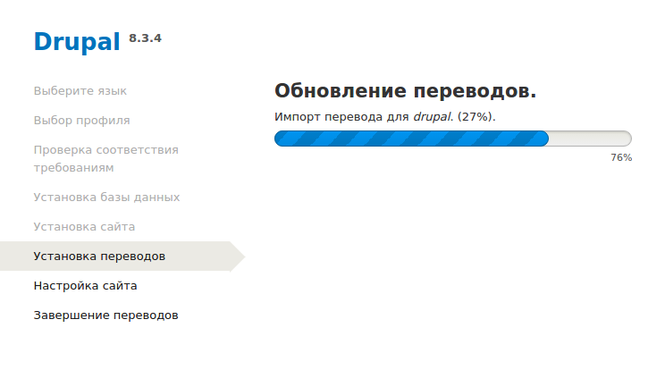
Далее введите личную информацию, такую как домен вашего сайта, электронную почту, и остальные сведения. При настройке Вам будут даны рекомендации по уровню сложности пароля и созданию имени администратора.
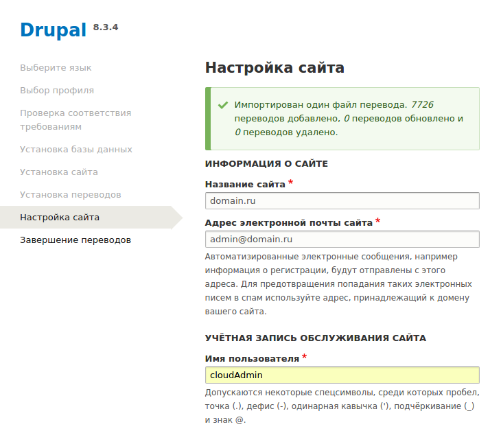
По завершению установки вы попадете в панель управления сайтом.
При переходе на сайт или ip-адрес для входа в CMS используйте созданные на последнем шаге логин и пароль.
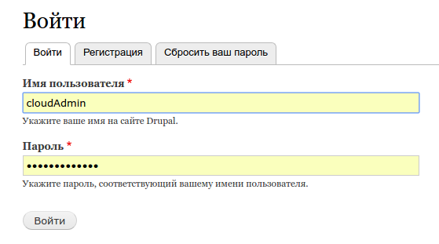
На этом установка завершена. Теперь вы можете использовать все возможности Drupal для своего бизнеса.
======================================
Drupal 8.3.4
Задачи установки
Настройка сайта
Статус
Импортирован один файл перевода. 7850 переводов добавлено, 0 переводов обновлено и 0 переводов удалено.
Предупреждение
Поскольку выполнены все необходимые изменения в sites/default и sites/default/settings.php, то в целях безопасности следует снять разрешения на запись в них. Если вы не знаете, как это сделать, обратитесь к онлайн-справочнику. Информация о сайте
Название сайта
Адрес электронной почты сайта
Автоматизированные электронные сообщения, например информация о регистрации, будут отправлены с этого адреса. Для предотвращения попадания таких электронных писем в спам используйте адрес, принадлежащий к домену вашего сайта.
Учётная запись обслуживания сайта
Имя пользователя
Допускаются некоторые спецсимволы, среди которых пробел, точка (.), дефис (-), одинарная кавычка ('), подчёркивание (_) и знак @.
Сложность пароля:
Повторите пароль
Пароли совпадают:
E-mail адрес
Региональные настройки
Страна по умолчанию
Выберите страну, информация о которой будет использоваться по умолчанию.
Часовой пояс по умолчанию
По умолчанию даты на сайте будут отображаться в выбранном часовом поясе.
Оповещения об обновлениях
Проверять обновления автоматически
Получать уведомления по электронной почте
Система будет оповещать об обновлениях и важных выпусках безопасности, которые доступны для установленных компонентов. Анонимная информация о сайте отправлена на Drupal.org.